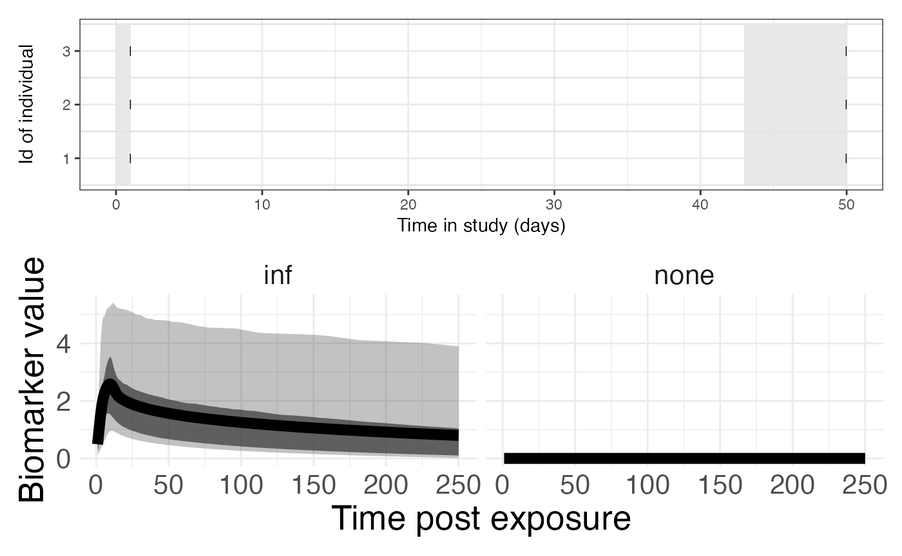
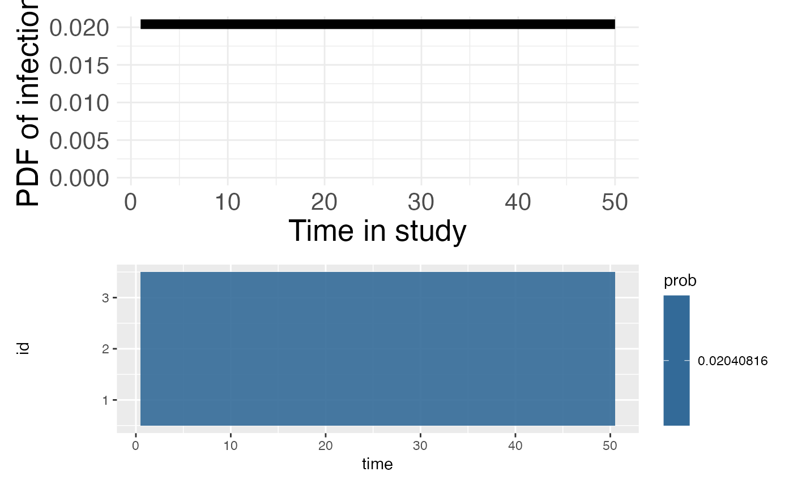

model_define.RmdThis document explains two critical parts of the model defined in the provided R code:
The observational model captures the process by which observed data
(IgG in this case) is generated from the underlying system.
It defines the relationship between the true (latent) variables and the
observed data.
obsLogLikelihood <- function(titre_val, titre_est, pars) {
ll <- dnorm(titre_val, titre_est, pars[1], log = TRUE)
ll
}
observationalModel <- list(
names = c("IgG"),
model = makeModel(
addObservationalModel("IgG", c("sigma"), obsLogLikelihood)
),
prior = bind_rows(
add_par_df("sigma", 0.0001, 4, "unif", 0.0001, 4)
) # observational model,
)names = c("IgG"): The observed
biomarker here is IgG, representing some measurement, such
as a biomarker (e.g., antibody concentration).
model = makeModel(...): The model
is created using the makeModel function, which defines how
the observation model is constructed.
addObservationalModel("IgG", c("sigma"), obsLogLikelihood):
This line adds an observational model for IgG, where the
parameter sigma is used to model the noise or uncertainty
in the observations. The log-likelihood function
(obsLogLikelihood) is used to define how the observations
relate to the latent variable.
prior = bind_rows(...): This block
defines the prior distribution for the parameter sigma,
which controls the observation noise.
add_par_df("sigma", 0.0001, 4, "unif", 0.0001, 4):
The parameter sigma is given a uniform prior distribution
between 0.0001 and 4, indicating that the
model expects a certain range of variability in the observed
data.
The antibody kinetics model describes how antibody levels evolve over time in response to different factors, such as infection or natural waning. This model accounts for both natural decay in antibody levels and changes due to infection.
Define the antibody kinetic functions
noInfSerumKinetics <- function(titre_est, timeSince, pars) {
titre_est_new <- titre_est - (pars[1] * titre_est) * (timeSince)
titre_est_new <- max(titre_est_new, 0)
titre_est_new
}
infTuenisPower2016 <- function(titre_est, timeSince, pars) {
y1 <- pars[1]
t1 <- pars[2]
r <- pars[3]
alpha <- pars[4]
v <- 0.001
mu <- 1 / t1 * y1
if (timeSince < t1) {
titre_est_boost <- exp(mu * timeSince)
} else {
titre_est_boost <- exp(y1) * (1 + (r - 1) * exp(y1)^{r - 1} * v * (timeSince - t1)) ^ {-1 / (r - 1)}
}
titre_est_log <- titre_est + log(titre_est_boost) * max(0, 1 - titre_est * alpha)
titre_est_log
}Create the antibody kinetics model
abkineticsModel <- list(
model = makeModel(
addAbkineticsModel("none", "IgG", "none", c("wane"), noInfSerumKinetics),
addAbkineticsModel("inf", "IgG", "inf", c("y1_h1", "t1_h1", "r_h1", "s"), infTuenisPower2016)
),
prior = bind_rows(
add_par_df("y1_h1", 1, 6, "unif", 1, 6),
add_par_df("t1_h1", 3, 14, "unif", 3, 14),
add_par_df("r_h1", 1, 5, "unif", 1, 5),
add_par_df("s", 0, 1, "unif", 0, 1),
add_par_df("wane", 0, 1, "unif", 0, 1)
)
)model = makeModel(...): The
antibody kinetics model is built using makeModel, which
defines two different antibody response models.
addAbkineticsModel("none", "PreF", "none", c("wane"), noInfSerumKinetics):
This line models the antibody kinetics when there is no
infection. The “PreF” biomarker is modeled with the parameter
wane, which represents the natural decay or waning of
antibody levels over time. The noInfSerumKinetics function
describes this process.
addAbkineticsModel("inf", "PreF", "inf", c("y1_h1", "t1_h1", "r_h1", "s"), infTuenisPower2016):
This line models the antibody kinetics after infection.
Several parameters describe the response to infection:
y1_h1: Initial antibody level
post-infection.t1_h1: Time of peak response.r_h1: Rate of antibody decay
post-infection.s: Slope of decay after peak
response.infTuenisPower2016: The function
governing the infection-induced antibody response.prior = bind_rows(...): This block
defines prior distributions for the model parameters:
y1_h1: Uniform prior between
1 and 6, representing the initial antibody
level after infection.t1_h1: Normal prior with mean
14 and standard deviation 3, representing the
time to peak response.r_h1: Uniform prior between
1 and 5, representing the rate of antibody
decay.s: Uniform prior between
0 and 1, representing the slope of the decay
post-infection.wane: Uniform prior between
0 and 1, representing the natural waning of
antibody levels over time.The antibody kinetics model accounts for the natural waning of
antibodies in the absence of infection, as well as the antibody response
after infection. Parameters such as y1_h1,
t1_h1, and r_h1 govern the kinetics of
antibody production and decay. The model uses both uniform and normal
priors to specify reasonable ranges for these parameters.
This R code defines a serological model using different components
such as biomarkers, exposure types, observational and antibody kinetics
models, and priors. The code creates a model definitions
(modeldefinition) and uses these to create a serological
model for data analysis (seroModel).
modeldefinition
Once all the data is loaded in, the first step is to define the
model. This includes the biomarkers, exposure types, exposure fitted,
observational model, and antibody kinetics model. Then, once the list is
created, the createSeroJumpModel function is used to create
the serojump model.
# See data_format.Rmd vignette about data input types
biomarkers <- "IgG"
# Create the data_sero dataframe
data_sero <- data.frame(
id = c(1, 1, 2, 2, 3, 3),
time = c(1, 50, 1, 50, 1, 50),
IgG = c(1.2, 4.4, 1.2, 4.4, 3.0, 3.0)
)
# Define possible exposure types
exposureTypes <- c("none", "inf")
# Create the exposure_data dataframe
exposure_data <- data.frame(
id = c(1),
time = c(14),
exposure_type = c("inf")
)
exposureFitted <- "inf"
# Create the attack_rate_data dataframe
attack_rate_data <- data.frame(
time = rep(1:25),
prob = rep(1/25, 25)
)
modeldefinition <- list(
biomarkers = biomarkers,
exposureTypes = exposureTypes,
exposureFitted = exposureFitted,
observationalModel = observationalModel,
abkineticsModel = abkineticsModel
)
seroModel <- createSeroJumpModel(data_sero, NULL, modeldefinition)## OUTLINE OF INPUTTED MODEL
## There are 1 measured biomarkers: IgG
## There are 2 exposure types in the study period: none, inf
## The fitted exposure type is inf
## PRIOR DISTRIBUTIONS
## Prior parameters of observationalModel are: sigma
## Prior parameters of abkineticsModel are: y1_h1, t1_h1, r_h1, s, wane
## Exposure rate is not defined over the time period. Defaulting to uniform distribution between 1 and 50 .Before running the whoel model it is good to check the data and the
priors. This can be done using a suit of functions
plotPriors function.
p1 <- plotSero(seroModel)
p2 <- plotPriorPredictive(seroModel)
p3 <- plotPriorInfection(seroModel)
p1 / p2
p3
Once seroModel is defined, the user can run the model using the
runSeroJump function. This function requires the seroModel,
settings for the RJ-MCMC algorithm, and information about saving the
model outputs.
save_info <- list(
file_name = "simple",
model_name = "ex1"
)
# Using more than one core might fail on windows,
if (.Platform$OS.type == "windows") {
mc.cores <- 1
} else {
mc.cores <- 2 # use as many as available, preferably 4.
}
rj_settings <- list(
numberChainRuns = 4,
numberCores = mc.cores,
iterations = 2000,
burninPosterior = 1000,
thin = 1
)
model_summary <- runSeroJump(seroModel, rj_settings, save_info = save_info)
# Need to have save_info model_summary to run these
plotMCMCDiagnosis(model_summary, save_info = save_info) # plots the convergence diagnosis
plotPostFigs(model_summary, save_info = save_info) #plots some plots of the posteriorsmodel_summary$post has all the posterior distributions
which the user can extract and plot themselves!